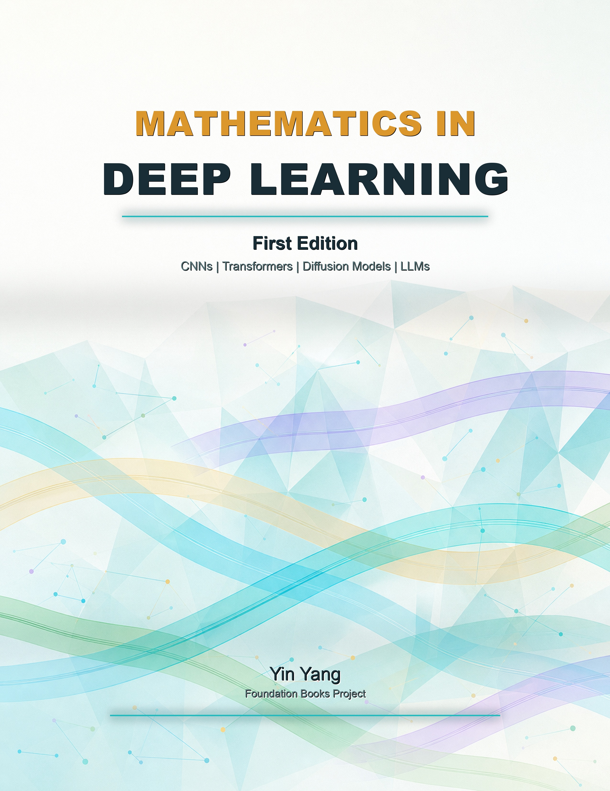

Mathematics in Deep Learning
Mathematics in Deep Learning
A textbook on the mathematical objects that shape modern deep learning, from tensors and optimization to attention, generative models, vision, audio, and reinforcement learning.
- Author
- Yin Yang
- Publisher
- Foundation Books
- Public Resources
- Amazon and companion code

Book contents
Table of Contents
- Mathematical Language of Deep Learning
- Functions, Decision Boundaries, and Neural Network Geometry
- Tensors, Data, Probability, and Empirical Risk
- Linear Operators, Images, and Convolution
- Optimization, Backpropagation, and Stochastic Gradients
- Depth, Residuals, Normalization, and CNN Architecture Math
- Transfer Learning, Fine-Tuning, and Representation Reuse
- Embedding Spaces and Learned Representations
- Sequence Models as Dynamical Systems
- Attention, Self-Attention, and Transformer Algebra
- Autoregressive Modeling, Entropy, and Decoding
- Markov Decision Processes and Reinforcement Learning Foundations
- Preference Learning, Policy Optimization, and RLHF/GRPO
- Training Theory Revisited: Stability, Calibration, Compression, and Distillation
- Vision Tokens and Multimodal Alignment: ViTs, CLIP, and Vision-Language Geometry
- Bounding Boxes, Matching, and Detection Metrics
- Masks, Per-Location Prediction, and Segmentation Losses
- Generative Modeling: VAEs, GANs, Score Matching, and Diffusion
- Audio Signals, Alignment, and Speech Recognition Objectives
- Speech Generation, Codecs, Vocoders, and Sequence-to-Audio Models
- Advanced Mathematical Topics in Modern Architectures
- Extended Mathematical Reading in Deep Learning